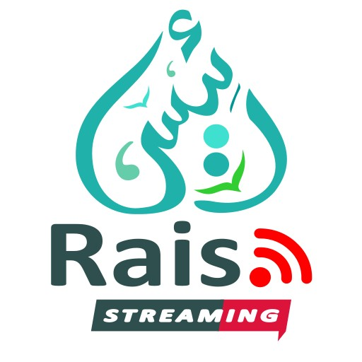

Ketuk tombol putar untuk mendengarkan siaran.

Media dakwah Islam penyejuk hati di Bumi Sukowati. Menghadirkan lantunan murattal dan kajian sunnah 24 jam nonstop untuk menemani aktivitas Anda.
Android: buka menu Chrome, lalu pilih Instal aplikasi. iPhone: buka di Safari, ketuk Bagikan, lalu pilih Tambah ke Layar Utama.
Ketuk tombol bulan di kiri bawah untuk memilih 15, 30, 60, atau 90 menit. Siaran berhenti sendiri setelah waktunya habis.
Aplikasi akan menyambungkan ulang otomatis, atau ketuk tombol putar untuk memulai ulang siaran.